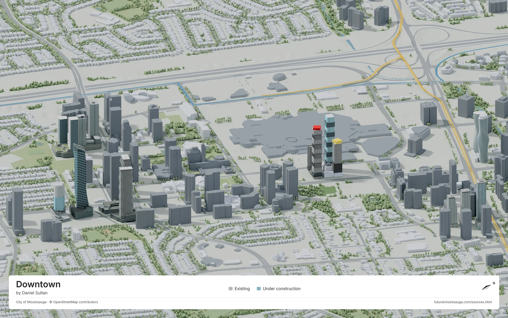

Three views across Square One
See Downtown today, under construction and with proposed towers from the same angle.

One camera over Downtown
Switch between the three stages on the homepage. The roads and existing buildings stay in place so you can see what each stage adds.
Which towers are built?
EX1 and EX2 at Exchange District now appear in grey. EX1 has been registered and EX2 has recorded residential leases. EX3 is still under construction.
At Rathburn Road and Duke of York Boulevard, the City lists Block 5 Tower 1 as an active proposal. The pink tower appears in the future view.
Port Credit and the shoreline
I moved the Port Credit camera so the waterfront buildings sit above the credit strip. The citywide view follows the Lake Ontario shoreline.
Bridge House has broken ground. The future view shows its three planned buildings in blue.
A closer look at the buildings
The Buildings directory now includes 41 detailed profiles. Each has a real photograph, its location and the project credits I could verify.